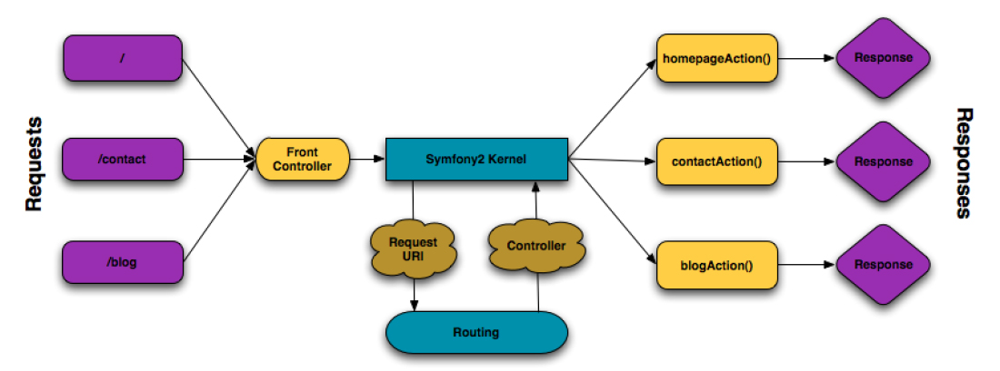

Symfony架构分析
Symfony是可复用的,是组件化的。
Symfony MVC分层架构图
M：Model 模型，负责数据库操作。
V：View 视图，负责调用Model调取数据，再调用模板，展示出最终效果。
C：Controller 控制器，程序的入口，决定改调用哪个View，并告诉View该做什么。
如此说来，程序的执行顺序是C-V-M 或 C-M ，和MVC的名字正好相反。
Request-Response模型
Request-Response模型
从本质上来说，HTTP协议实际上描述了一个Request-Response模型。与之相关的PHP代码实际上都在做着解释请求、生成响应的工作，Symfony则更进一步的将Request和Response对象化了。
Request-Response模型是整个Symfony的基础模型，可以毫不夸张的说，整个Symfony都构筑在这个基础模型之上(参见Front Controller部分)。
Request对象
Request类很简单，封装了原生PHP的各大超全局输入变量:use Symfony\Component\HttpFoundation\Request
$request = Request::createFromGlobals();
$request->getPathInfo(); //the URI being requested (e.g. /about) minus any query parameters
$request->query->get('foo'); //$_GET
$request->request->get('bar', 'default value if bar does not exist'); /$_POST
$request->server->get('HTTP_HOST'); //$_SERVER
$request->files->get('foo'); //retrieves an instance of UploadedFile identified by foo
$request->cookies->get('PHPSESSID'); //$_COOKIE
$request->headers->get('host');
$request->headers->get('content_type');
$request->getMethod(); //GET, POST, PUT, DELETE, HEAD
$request->getLanguages(); // an array of languages the client acceptsxxxxxxxxxxx`z`Response对象
Response类也非常简单，用来代替原生PHP的echo(),header():
Symfony\Component\HttpFoundation\Response
$response = new Response();
$response->setContent('<html><body><h1>Hello world!</h1></body></html>');
$response->setStatusCode(Response::HTTP_OK);
$response->headers->set('Content-Type', 'text/html');
// prints the HTTP headers followed by the content
$response->send();Front Controller
一般情况下，代码会以各个独立的模块分层存在。为了根据请求的不同调用合适的功能代码，一些如CodeIgniter的框架都有一个统一入口文件(index.php)负责这项工作。 在Symfony等一些框架(其他如PHPWind9.x以后的版本)中，单独抽象出了Front Controller的概念。和CodeIgniter中的index.php一样，如上图Symfony分层架构图所示,FrontController是一个统一入口，一切发到我们Application的请求都会由其处理，然后根据接收到的Request不同，按照配置的Route规则加载对应的Controller的Action。 处理请求之后，生成响应对象并send()到客户端。
根据环境的不同，Symfony自带有两个Front Controller：
web/app.php #生产环境
web/app_dev.php #开发环境
之所以没有测试环境对应的前端控制器，是因为测试环境可以通常只在单元测试时使用。
当然console工具也提供了能在任意环境下运行的Front Controller。
Symfony中的Front Controller非常简单，遵循的逻辑可以概括为”处理请求，发送响应“,这也是整个Symfony框架对Request-Response模型的实现：
// web/app.php
require_once __DIR__.'/../app/bootstrap.php';
require_once __DIR__.'/../app/AppKernel.php';
use Symfony\Component\HttpFoundation\Request;
//初始化一个prod环境、非debug模式运行的AppKernel
$kernel = new AppKernel('prod', false);
$kernel->handle(Request::createFromGlobals()) //处理请求
->send(); //发送响应至此，针对Request-Response模型的处理流程已经总体规划完毕了。
对于一个Symfony项目myproj,为了方便起见，假设整个文件夹都位于/var/www/下,当我们在浏览器中访问：
localhost/myproj/web/some_route
实际上是在调用Front Controller来执行与some_route对应的代码。事实上，上面这个URL在默认情况下等效于：
localhost/myproj/web/app.php/some_route
当然，在开发模式下，可以访问：
localhost/myproj/web/app_dev.php/some_route
激活debug工具并能自动重建缓存。
正是由于Front Controller已经实现了Request-Response这样的基本流程，在Symfony中为一个基本组件（Bundle）添加页面只需要要遵循两步：
创建Controller #定义如何根据Response(Request?)生成Response对象
配置Route #配置URL和Controller的映射关系
当然，为了避免组织混乱、保持结构清晰，实际中，Route、Controller等等都是以Bundle来设计的。
Bundle
Bundle从PHP的角度而言，可以视作一个命名空间。一旦一个PHP命名空间添加了Bundle Class，就成为Bundle。这个Bundle Class的命名必须遵循以下规则：
只使用字母和下划线
使用CamelCased命名风格
使用descriptive和short的名字
以vender名为prefix
以”Bundle”为suffix
Bundle Class的getClass()方法返回这个类名。
Bundle是Symfony的基本组件。Bundle存放了与某个特性相关的一切文件(比如PHP类、配置、甚至是css文件和JavaScript文件)的目录。 事实上，Symfony的Bundle和PHPCMS里的module作用相当，类似于模块、插件。但是相较于PHPCMS之类其他的框架，Symfony的Bundle具有更好的抽象和实现。
一个Bundle，通常位于src/VenderOfBundle/BundleName之下,其中的目录结构多为：
Vender/
YourBundle/
VenderYourBundle.php
Controller/ #控制器
Spec1Controller.php
Spec2Controller.php
DependencyInjection/ #DI
Resources/
config/
views/
Tests/ #测试
想要添加一个Bundle，应该先创建以上目录，然后修改app/Kernel.php文件，为registerBundles()方法添加一个该Bundle的实例：
// app/AppKernel.php
public function registerBundles(){
$bundles=array(
//...
new Vender\YourBundle\VenderYourBundle();
);
//...
return $bundles;
}以上两步可以归纳为：
创建Bundle
注册Bundle
当然，添加Bundle的这些步骤可以用一个命令代替：
php app/console generate:bundle
--namespace=Vender/YourBundle --format=yml Route
Route是指从Request（如URL路径,HTTP Method)到控制器(具体到Action)的映射。所以， 一条路由规则有两个要素组成：
URL Path
与URL Path匹配的Controller
我们还可以为这条路由规则起一个独一无二的名字，这样我们就能用于生成URL了。
路由层的作用就是把输入进来的URL转换为要执行的Controller。
Symfony会从一个单独的路由配置文件中加载所有的路由规则。这个路由配置文件通常是
app/config/routing.yml
,当然，Symfony支持高度定制，我们可以把默认的路由文件配置成其他任意其他文件(包括XML和PHP文件)。如：
# app/config/config.yml
framework
# ....
router: { resource: "%kernel.root_dir%/config/routing.yml"}
当然，从URL到控制器动作，参数匹配是必不可少的。Symfony的路由系统支持:
URL匹配 #通过@Route()设置
必选参数 #通过占位符来设置
可选参数 #通过占位符和设置defaults来设置
正则匹配 #通过requirements设置
HTTP Method匹配 #通过@Method()
/**
*@Route("/blog/{page}",defaults={"page": 1},requirements={
* "page": "\d+"
*})
*@Method("GET")
*/
public function indexAction($page){
//...
}当然，威力更巨大的是condition属性，支持无限可能的定制。
contact:
path: /contact
defaults: { _controller: AcmeDemoBundle:Main:contact}
condition: "context.getMethod() in ['GET','HEAD'] and request.headers.get('User-Agent') matches '/firefox/i' "
这个配置会被转换为以下的PHP代码：
if(rtrim($pathinfo,"/contact")===''&&
(
in_array($context->getMethod(),array(0=>'GET',1=>'HEAD')) &&
preg_match('/firefox/i',$request->headers->get("User-Agent"))
)
){
//....
}一个Bundle中的Route
要让合适的Controller和Action发生调用，必须建立url与之的映射。
#src/Vender/YourBundle/Resources/config/routing.yml
specController:
path: /specController/{limit}
defaults: { _controller: VenderYourBundle:specController:yourAction}
app级Route
尽管所有的路由配置规则是从一个单独的文件中读取的，大家在实际中还是会通过resource导入其他路由规则。比如，使用Annotation格式的路由配置应设置:
app:
resource: "@AppBundle/Controller"
type: annotation #使用Annotation reader来读取resource变量
如果我们手工添加了一个Bundle，我们可以把它自身包含的Route规则导入app level的配置中，即应该在app/config/routing.yml中添加配置：
# app/config/routing.yml
vender_yourbundlename
resource: "@VenderYourBundle/Resources/config/routing.yml"
prefix: /当然，如果是用php app/console generate:bundle命令生成的bundle，那么这一步已经由Symfony替我们做好了。
双向映射
Route提供了bidirectional System:
match($URL) #返回匹配到的控制器及参数构成的数组
generate($RouteName,$paramsArray) #生成URL
Controller
我们知道，每一个Route规则都有一个_controller对象，我们当然可以用完全限定名的ClassName::ActionName的形式来引用一个Controller，比如：AppBundle\Controller\BlogController::ShowAction。
但实际上这样的表达是有冗余信息的，最起码还要指出BlogController位于的命名空间Controller是没必要的，所以Symfony还支持对Controller的逻辑命名, 一条指定Controller的Action的逻辑命名通常遵循这样的约定：BundleName:ControllerName:ActionName
通常这样的逻辑名称会被映射为：path/to/BundleName/Controller/ControllerName.php文件中的ActionName方法
比如：AcmeDemoBundle:Random:Index这个控制器通常会会映射为：Acme\DemoBundle\Controller\RandomController类中的indexAction方法。
另外值得注意的是，Symfony中Controller的Action 与CodeIgniter之类的框架并完全一样:
CodeIgniter中的控制器直接输出响应，而Symfony中则是必须返回Response对象;
Symfony支持从Route和Request定制Action方法的参数。而且对于Action方法声明，参数顺序并不重要。
use Symfony\Component\HttpFoundation\Request;
/**
* @Route("/hello/{firstName}/{lastName}",name="hello")
*/
public function indexAction($lastName,$firstName,Request $request){
//$firstName和$lastName等参数顺序并不重要
//可以直接使用$request
$page=$request->query->get("page",1);
}此外，Symfony\Bundle\FrameworkBundle\Controller\Controller提供了一系列helper方法。
Redirecting
generateUrl($route)
redirect($absUrl)
redirectToRoute($route) # new RedirectResponse($this->generateUrl($route))
Rendering Templates
render($pathOrLogicalTemplateName,$array) #render a template and return a Response object
Accessing other Services
get(‘templating’)
get(‘router’)
get(‘mailer’)
Exception
FlashMessage
addFlash()
Forwarding
Symfony2目录结构分析
了解框架的目录结构是框架快速入门的一个途径，一个成熟的框架，每个功能模块都被划分存放在不同的目录。
Symfony的基本架构十分清晰。与架构相对应，Symfony的目录结构也是非常清晰的。默认的结构组织形式如下：尽管拥有如此清晰的文件结构，Symfony也支持任意定制目录结构。
|--app //Application级别文件目录，应用配置config(插件的配置文件需要import进来才生效)，应用缓存cache(缓存的类和模板)，应用命令行console
|--|--AppCache.php
|--|--AppKernel.php //入口文件里面会初始化一个AppKernel类，AppKernel类就是在这个文件里面，Appkernel类的主要功能是初始化整个web应用的Bundle。包括Symfony2框架的核心Bundle、第三方插件的Bundle、我们自己编写的应用的Bundle，Bundle在Symfony2里面就相当于一个具有完成某一功能的完整的包，而且我们要用的Bundle都必须在AppKernel类里面注册。
|--|--autoload.php //该文件负责自动加载注册在里面的类，通常我们不需要手动修改它
|--|--bootstrap.php.cache //Symfony2核心的类的缓存文件，Symfony2框架必须用到的核心的类都会被编写整理到这个文件里面。这样做的目的是减少运行的时候打开文件的个数，提高运行的速度。因为不同的类都被存放在不同的文件里面，如果没有把这些必要的类缓存在一个文件里面，那么我们每次运行都要打开多个文件。如果把这些必要的类整理到一个文件里面，那么我们每次运行这些类就在同一个文件里面了。例如：Request类、Response类、Container类、Kernel类等都会被缓存到这个文件里面。所以，如果我们想在 Request类 里面 echo '在Request里面调试'; 这样的语句，我们就把这语句编写在bootstrap.php.cache文件下的Request类而不是symfony/vendor/symfony/symfony/src/Symfony/Component/HttpFoundation/Request.php里面的Request类。其实symfony/vendor/symfony/symfony/src/Symfony/Component/HttpFoundation/Request.php里面的Request类就被缓存到bootstrap.php.cache里了
|--|--cache //缓存目录，按不同模式（生成模式、调试模式）缓存。主要缓存了模板文件、Container类、路由映射相关数据等
|--|--|--dev
|--|--|--prod
|--|--check.php
|--|--config //存放配置文件的目录，config_dev.yml和config_prod.yml才是被Symfony2框架加载的配置文件。但是为了方便管理，我们会把不同模块的配置编写到不同配置文件中，要使这些配置文件生效，那么我们还需要import它们进config_dev.yml和config_prod.yml。
|--|--|--config_dev.yml //调试模式的配置文件
|--|--|--config_prod.yml //生产模式的配置文件
|--|--|--config_test.yml
|--|--|--config.yml //通用的配置文件，只要import进相应的调试模式下的配置文件，就可以生效
|--|--|--parameters.yml //存放配置文件使用的变量，例如：数据名、数据库密码、数据库host等等
|--|--|--parameters.yml.dist
|--|--|--routing_dev.yml //调试模式下的路由配置文件，我们在src里面编写的路由配置文件需要import到这个文件写才可以生效
|--|--|--routing.yml //通用路由配置文件
|--|--|--security.yml //防火墙配置文件，这里的防火墙是web应用防火墙，不是服务器的防火墙，里面配置有角色权限、ACL等，这个文件需要config_*.php import进去才可以生效
|--|--console
|--|--logs //Symfony2运行的日志，同理，不同模式下有不同的日志
|--|--|--dev.log
|--|--|--prod.log
|--|--phpunit.xml.dist
|--|--Resources
|--|--|--views
|--|--SymfonyRequirements.php
|--bin
|--composer.json
|--composer.lock
|--LICENSE
|--README.md
|--src //项目源码(包含Controller、Model、View、路由配置文件、应用的配置文件等)，一般以各个Vender提供的针对网站各个功能的Bundle分类。
|--|--DemoBundle //src目录下存放的就是我们应用层的代码，一个功能就可以组织成一个Bundle，例如简单一点的一个购物车功能、复杂一点的一个博客系统都可以组织成一个Bundle。
|--|--|--AcmeDemoBundle.php //每一个新Bundle文件里面的Bundle类都需要通过手动添加或命令行生成的方法注册到app/AppKernel.php/AppKernel类中，才会被Symfony2框架加载而生效，
|--|--|--Command
|--|--|--Controller //Controller目录，顾名思义，这个目录下存放的就是Controller类，如果不懂什么是Controller，麻烦请先学习MVC
|--|--|--DependencyInjection //该目录存放对AcmeDemoBundle的扩展
|--|--|--EventListener //该目录存放事件监听器的类，Symfony2框架是一个事件驱动的框架，相应事件触发时，这些监听器就会被执行。
|--|--|--Form //该目录存放着表单类。
|--|--|--Resources //该目录存放着Bundle的配置文件、模板文件等
|--|--|--|--config
|--|--|--|--|--routing.yml //该文件存放着Bundle的路由配置
|--|--|--|--|--services.xml //该文件存放着Bundle的services配置
|--|--|--|--public
|--|--|--|--views //该文件夹存放着Bundle的所有模板文件
|--|--|--|--|--Tests
|--|--|--|--|--Twig
|--UPGRADE-2.2.md
|--UPGRADE-2.3.md
|--UPGRADE-2.4.md
|--UPGRADE.md
|--vendor //由composer管理的第三方依赖模块，包括Symfony2的核心模块（HttpKernel、DependencyInjection等组件）和第三方插件（如最常用的SonataAdmin）
|--web //网站的根目录，全站公开访问的入口，包括入口脚本Front Controller(app.php和app_dev.php)和静态资源性文件。
|--|--app_dev.php //调试模式下的入口文件（在调试模式下可以额外输出应用的运行信息，包括加载时间、执行的路由、执行sql语句等）
|--|--apple-touch-icon.png
|--|--app.php //生产环境下的入口文件（相当于TP框架index.php作用）
|--|--bundles
|--|--config.php
|--|--favicon.ico
|--|--robots.txt
Symfony启动顺序
Kernel->initializeBundles() 初始化Bundle
Kernel->registerBundle() 注册Bundle
Kernel->bundleMap生成Bundle关系图
Kernel->initializeContainer() 初始化容器（缓存）
Kernel->buildContainer() 建立容器
Kernel->prepareContainer() 预备容器
Bundle->getContainerExtension() 获取Bundle扩展
Bundle->build($container) 编译Bundle
Symfony\Bundle\FrameworkBundle->build($container) 添加了不少 CompilerPassInterface（路由、事件、模板、资源等）
ContainerBuilder-> … ->setMergePass(new MergeExtensionConfigurationPass($extensions)) 设置MergePass（CompilerPassInterface），用于合并Bundle扩展配置
Kernel->registerContainerConfiguration(LoaderInterface $loader) 获取配置、服务
ContainerBundler->compile() 编译容器
$compiler->compile($this);
开始执行$container->addCompilerPass() 里面的 CompilerPassInterface ，（包括 FrameworkBundle->build($container)里添加的）
默认从MergeExtensionConfigurationPass 开始
MergeExtensionConfigurationPass->process($container)
process 包含
BundleExtension->prepend($container); // 必须实现 PrependExtensionInterface 接口才执行该方法
BundleExtension->load($config, $container)
所有CompilerPassInterface 依次 ->process()
foreach ($this->passConfig->getPasses() as $pass) {
$pass->process($container);
}
foreach(Kernel->getBundles() as $bundle){
Bundle->boot() 启动
}
$reqponse = Kernel->handle() 处理
Container->get('http_kernel')->handle($request)
$response->send();
$kernel->terminate($request, $response)
后续更新CompilerPassInterface 详细顺序
symfony调用的流程
symfony框架调用的流程
目前这个是在RegisterController控制器中的一段代码
$user = this>getAuthService()>register(this->getAuthService()->register(this>getAuthService()>register(registration);
现在我们去找getAuthService()这个方法
** 仅以使用PHPstudy ctrl + F 查找public function getAuthSercive() 类似的这种控制器 **
return $this->getServiceKernel()->createService(‘User.AuthService’);
我们在里面可以看到在Service里面的User目录下的AuthService控制器
** 找到回到上面，看到getAuthService()->register调用的是register方法，我们去AuthService去找register方法
public function register($registration, $type = ‘default’)